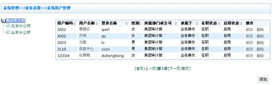
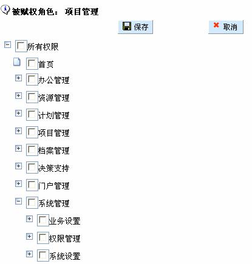
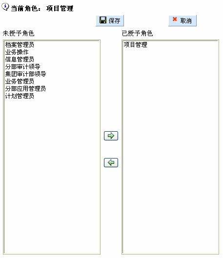
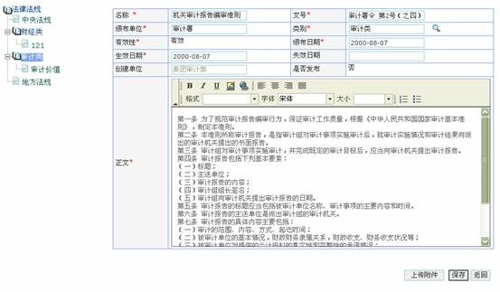

目 录
前 言
Ø 手册阅读指南
本手册的读者为使用审计管理信息系统的单位领导及审计人员。
本手册全面介绍了系统各个业务模块的功能，全面的资源管理，完善的质量控制，清晰的业务分工，深入的成果利用，审计管理信息系统带您进入审计工作的信息化时代。
本手册完全按照读者认识和实际作业的顺序为主线，通过鲜活的实例与图示，详尽地向您展示了审计管理信息系统的所有功能。我们以系统菜单和业务流程先后为序，通过“系统管理”、“资源管理”、“计划管理”、“项目管理”、“决策支持”、等模块及其菜单中所有功能的介绍，给读者一个全面认识和系统了解。
通过手册目录，您可以清晰地了解本手册的介绍线索，并根据目录迅速查找感兴趣的内容。
Ø 用户过程中的注意事项
手册中的一些图形界面可能与软件中实际的界面稍有不同，但功能及操作是类似的，请用户在使用中注意。
由于种种原因，手册中的一些说明可能与实际的软件有所不同，此时，以软件为准，请用户在使用中予以注意。
未尽之处，请参照软件提示操作，或致电北京用友审计软件有限公司，以便及时获得服务及支持。
Ø 版权声明
本手册的版权归北京用友审计软件有限公司所有，未经我公司书面许可，任何单位或个人不得以任何形式复制或传播本手册的任何部份。
本手册所述内容如有更改，恕不另行通知。
1.1.1.1 服务器端的系统配置
硬件配置：
|
主要设备 |
最低配置 |
推荐配置 |
|
CPU |
奔腾4 2.4GHz |
奔腾4 3.2GHz或更高 |
|
硬盘 |
40GB |
80GB或更高 |
|
内存 |
1GB |
2GB或更高 |
|
网络 |
标准10M以太网络 |
标准100M以太网络 |
软件配置：
操作系统：Microsoft Windows NT/2000
建议：Microsoft Windows 2000 Server (SP4)
1.1.1.2 客户端的系统配置
硬件配置：
|
主要设备 |
最低配置 |
推荐配置 |
|
CPU |
奔腾3 1GHz |
奔腾4 2.0GHz或更高 |
|
硬盘 |
500MB |
10GB或更高 |
|
内存 |
128MB |
256MB或更高 |
|
网络 |
标准10M以太网络 |
标准100M以太网络 |
软件配置：
操作系统：Microsoft Windows 98/NT/Me/2000/XP
浏览器：Microsoft IE 6.0+
办公软件：Microsoft Office 2003以上
硬件配置：
|
主要设备 |
最低配置 |
推荐配置 |
|
CPU |
奔腾4 2.0GHz |
奔腾4 3.2GHz或更高 |
|
硬盘 |
10GB |
40GB或更高 |
|
内存 |
512MB |
1GB或更高 |
软件配置：
操作系统：Microsoft Windows 98/NT/Me/2000/XP
浏览器：Microsoft IE 6.0+
办公软件：Microsoft Office 2003以上
提示：首先安装机器上的335、3306端口不能被占用，其次软件包路径中不能包含中文，并且机器名称不能是中文。
第一步：启动系统服务
首先，将安装程序解压到硬盘上，将ais.properties文件中cas.host，casmanager.host，ais.host后面的ip地址改为本机地址，如果只在本机访问可以使用127.0.0.1或localhost。然后点击软件包根目录下的startup.bat
第二步：检查系统是否正常启动
右键点击“我的电脑”，选择“管理”，选取“服务和应用程序”下的“服务”，确认AIS App Server 和AIS DB Server 已启动
第三步：插入加密锁
第四步：检查加密锁是否正常
点击软件包bin文件夹下的lic.exe
出现以上信息说明，加密锁正常。
第五步：访问系统
在IE6.0地址栏中输入http://127.0.0.1:335/ais/，以账号admin及密码admin访问系统。
提示：系统设置ADMIN为超级用户，先通过ADMIN建立系统用户，才能进行相应的系统操作，具体操作详见2-9章。
系统管理模块是本系统的基础模块，它包括了业务设置、权限管理、系统设置三个子模块，这些信息的设置直接关联到系统的界面表现、系统菜单的组织、业务模块基础选项的范围、系统用户的功能权限以及业务审核审批的流程。
业务设置模块是对基础信息、审批流程、组织结构、系统用户四个方面进行设置。如下图所示：

2.1.2.1 业务描述
基础信息设置主要是对各业务模块需要选择调用的基础信息进行编码定义，包括项目计划、档案、被审计单位、人员管理、审计支持、信息管理六个方面。如下图所示：
2.1.2.2 操作说明
以计划类别设置为例进行说明，其他基础信息的设置方法与计划类别方法相似，不再一一赘述。
由路径：“系统管理―>业务设置―>基础信息设置”，进入基础信息设置的操作页面。
点击左侧菜单树上的，“项目计划”下的菜单内容会全部展开；然后点击，可以在页面右侧看到“计划类别”的维护界面，在此界面中，可以对计划类别进行增加、修改和删除的操作，如下图所示：
【添加】可以添加一个计划类别。需要录入编码和名称，系统会进行编码和名称唯一性校验，如果不重复，点击后，会新增一个计划类别。
【修改】可以修改已经添加的计划类别。点击某计划类别右侧操作列中的，即可对编码和名称进行修改，同新增一样系统会进行唯一性校验。如果不重复，点击后，将完成对该计划类别的修改。
【删除】可以删除已经添加的计划类别。点击后，系统会进行提示，警告登录用户：“删除后可能影响其他业务的正常执行？确定删除？”。如果点击，将删除该计划类别；如果点击，将取消删除。
2.1.3.1 业务描述
审批流程主要是对各业务模块需要调用的审批工作流程进行设置。包括已发布流程、未发布流程、已失效流程、定制业务对象、设置表单校验四个方面。
2.1.3.2 设置表单校验
2.1.3.2.1 业务描述
“设置表单校验”可以起到业务层面的表单设计器作用。针对业务对象创建表单，并对表单进行编辑，及对表单字段进行必填、写入、查看的定义。
2.1.3.2.2 操作说明
由路径：“系统管理―>业务设置―>审批流程设置―>设置表单校验”，进入设置表单校验的操作页。
【添加】点击可以添加一个流程定义，主要包括流程名称、业务对象和表单类型。如下图所示：
【设置表单校验】能够对流程定义对应的表单设置校验，点击后进入到如下页面：
在设置表单校验页面可以看到字段编码、字段名称、必填、写入、查看等信息。必填、写入和查看的作用如下：
<必填>：如果勾选，表明该字段在表单中是必填字段，不能为空。
<写入>：如果勾选，表明该字段在表单中是可以修改的。
<查看>：如果勾选，表明该字段在表单中仅能被查看，不能修改。
2.1.3.3 未发布流程
2.1.3.3.1 业务描述
未发布流程用于归集尚未发布的工作流程，可以对未发布流程进行修改、设计。
2.1.3.3.2 操作说明
由路径：“系统管理―>业务设置―>审批流程设置―>未发布流程”，进入未发布流程的操作页面。
【添加新流程】点击，可以添加一个新的流程，可以定义流程名称、业务对象及对应的表单类型。如下图所示：
【修改】点击，可以对已经创建的流程定义进行修改，如下图所示：
【设计流程】点击，可以设计该审批流程。代表添加新节点（如审核、审批等）；代表添加新路径；代表流程属性；代表刷新；代表保存。也可以右击鼠标，出现右键菜单，进行相关操作。如下图所示：
可以对每一节点进行节点定义，右击节点，可以编辑或删除该节点。
点击后，出现如下图所示的页面：
可以从基本属性、图表属性、表单属性四个方面定义该节点。如：表单属性中，项目编码字段勾选了<查看>和<写入>，表明：在审核环节，审核人可以查看并修改项目编码字段，但该字段不是必填项。
【发布流程】点击，可以将已经设定好的审批流程发布。发布后，该流程进入到“已发布流程”模块。
【删除】点击，将删除该流程。
2.1.3.4 已发布流程
2.1.3.4.1 业务描述
已发布流程用于记录已经发布的工作流，可以对其设置群组，也可以将其置于“失效”状态。如下图所示：
2.1.3.4.2 操作说明
由路径：“系统管理―>业务设置―>审批流程设置―>已发布流程”，进入已发布流程的操作页面。
【设置群组】点击，进入到如下页面，可以添加群组，对群组授权或删除群组。如下图所示：
点击，进入到如下页面，右击节点，可以对节点分配任务。如下图所示：

点击，进入如下页面，可以指定该节点是否可以批量操作。同时可以指定该节点的任务分配策略，即：本步骤由哪个群组来进行操作，系统提供五种方案供选择：据用户指定、据角色指定、据角色模版制定。如下图所示：
<据用户指定>可以在设置审批流时，由用户来指定该节点的操作人员，可以是一个人，也可以是一个群组。如下图所示：

<据角色模板指定>可以在设置审批流时，由用户来指定系统中已经建立的应用角色作为该节点操作人。如下图所示：
<选择公司级次>:以流程发起人所在公司级次为本级，选择角色模版中角色所在的公司级次，本级、上级或下级。
点击，完成审批流程的设置。
【失效】点击，可以将已经发布的流程置于“失效”状态，失效后，该流程将不能再被启用。
【查看流程图例】点击，可以查看流程的设置情况。
2.1.3.5 已失效流程
2.1.3.5.1 业务描述
已失效流程模块用以归集已经失效的流程。失效后，该流程不能再被启用。如下图所示：
【查看流程图例】：点击，可以查看流程的设置情况。
2.1.4.1 业务描述
按照集团审计部门建制情况，设置系统组织结构，同时记录组织机构的基本信息。
对于下级审计部门可以设置为公司，也可以设置为部门。
<公司>是独立的管理层级，可以具有本公司的应用角色，和管理权限。
<部门>不是独立的管理层级，应用角色和管理权限遵从上级公司。
2.1.4.2 操作说明
由路径：“系统管理―>业务设置―>组织机构设置”，进入组织机构设置的操作页面。
【增加公司】点击左侧组织机构树上的某一机构，再点击，可以在该组织机构下创建下属公司。
【增加部门】点击左侧组织机构树上的某一机构，再点击，可以在该组织机构下创建下属部门。
【修改】点击左侧组织机构树上的某一机构，再点击，可以修改该组织结构。
2.1.5.1 业务描述
可以对系统用户进行管理，包括用户信息、启用状态等。
2.1.5.2 操作说明
由路径：“系统管理―>业务设置―>系统用户管理”，进入组织机构设置的操作页面。

【添加】点击，可以添加系统用户，填写用户信息，并选择该用户属于业务操作还是系统管理。
<业务操作>：可以进行业务操作，如制定计划、实施项目等。也可以进行系统管理。
<系统管理>：仅能进行系统管理，不能进行业务操作。
系统会对登录名称进行唯一性校验，如果重复，系统会给出提示；系统要求密码不能少于六位，否则系统也会给出提示。系统用户信息页面如下图所示：

输入员工信息后，点击，完成新增员工的录入工作。
【修改】点击，可以对已经建立的系统用户进行修改，登录名称一经建立，不能再被修改。如下图所示：
【删除】点击 ，可以删除系统用户。但前提是：该用户已经被注销。如下图所示：
，可以删除系统用户。但前提是：该用户已经被注销。如下图所示：

业务设置模块主要对系统日志、图片管理、菜单管理四个方面进行设置。如下图所示：
2.2.2.1 业务描述
记录用户登录系统的操作信息。
2.2.2.2 操作说明
由路径：“系统管理―>系统设置―>系统日志”，进入系统日志的操作页面。
<中文名> :系统用户的中文名称。
<模块名> :系统模块的名称。
<模块描述> :如用户登录对于模块信息的具体描述。
<访问时间>：设定时间范围。
【查询】点击 ，查询满足条件的系统日志，如未输入查询条件，则系统默认为全部。
，查询满足条件的系统日志，如未输入查询条件，则系统默认为全部。
【清空】点击，可以清空日志记录。
2.2.3.1 业务描述
可以管理系统的登录图片及head图片。
2.2.3.2 操作说明
由路径：“系统管理―>系统设置―>图片管理”，进入图片管理的操作页面。如下图所示：
【提交】输入信息并上传图片后，点击，完成图片的编辑。
【删除全部】点击，则清空编辑界面的内容。
2.2.4.1 业务描述
能够管理系统的菜单，可以创建、修改、移动菜单。
2.2.4.2 操作说明
由路径：“系统管理―>系统设置―>菜单管理”，进入菜单管理的操作页面。如下图所示：
【添加】在左侧菜单树上点击某一节点，点击后，可以在该节点下创建下级菜单。需要对应功能序号、功能名称及链接地址等。如下图所示：
【编辑】点击，可以修改已经创建的菜单。
【删除】点击，可以删除已经创建的菜单。如果此菜单有子菜单，删除时将子菜单也一并删除。
【动作节点】点击页签，可以定义动作节点。如：“显示”、“发布”等。该功能关系到菜单授权和按钮授权。如下图所示：
【节点调整】点击页签，可以调整该菜单至新的节点。需要定义关联节点（必须是和目标位置平行的节点）和新功能序号。如下图所示：
【调整】输入关键节点、新功能序号后，点击，则将菜单调整至指定位置。
2.3.1.1 业务描述
应用角色分为角色模版、管理角色和业务角色三种。
系统设置ADMIN为超级用户，由ADMIN创建角色模版与管理角色，创建角色模版再将角色模版赋予管理角色，拥有管理角色权限的操作人选择角色模版，创建业务角色，只有创建的业务角色才能赋予具体的操作人。
2.3.1.2 操作说明
由路径：“系统管理―>业务设置―>应用角色管理”，进入系统角色管理的操作页面。
以增加项目管理角色为例，进行应用角色管理的操作说明。
【增加角色】：点击，创建一个应用角色，如下图所示：
提示：在新创建角色时必须要有ADMIN，进行角色模版的创建，并将创建的角色模版赋予管理角色。
输入角色名称“项目管理”，在下拉框中选择选项“角色模版”，点击，完成角色模版的创建。
【重置】点击，则清空输入内容。
【返回】点击，则返回上一操作界面。
【操作授权】点击，则进入选择操作界面：

勾选允许该角色允许的业务操作，点击，则完成角色的操作授权。
在制定角色模版后，创建相应的管理角色。
【增加角色】：可以增加一个应用角色，如下图所示：
输入角色名称“项目管理”，在下拉框中选择选项“管理角色”，点击，完成管理角色的创建。进入如下界面：
点击，选择角色模版，如下界面所示：

选中左侧“未授予角色”框中的应用角色，点击后，该系统用户就会增加该应用角色。选中右侧“已授予角色”框中的应用角色，点击后，则取消该系统用户的该应用角色。
点击，完成可控角色设置。
【操作授权】与角色模版中操作授权一致。
提示：在对管理角色进行操作授权时，要选择“系统管理”此项内容。
将该管理角色赋予具体用户。
由路径：“系统管理―>业务设置―>用户权限设置”，进入赋予用户权限的操作页面。点击左侧组织机构上的节点，如，右侧出现综合审计处所属的系统用户，选择一个系统用户QY，可以对该用户进行权限设定。
赋予登陆名称为QY的用户项目管理的管理角色。
【用户授权】：点击，可以对选中的系统用户进行授权。选中左侧“未授予角色”框中的应用角色，点击后，该系统用户就会增加该应用角色。选中右侧“已授予角色”框中的应用角色，点击后，则取消该系统用户的该应用角色。
进入如下界面：
选择“项目管理（管理角色）”，点击，则完成对用户的授权。
此时QY，拥有项目管理的管理角色，可以进行业务角色的设置。
以QY登陆审计管理信息系统。
由路径：“系统管理―>业务设置―>用户权限设置”，进入赋予用户权限的操作页面。
与增加管理角色相同，点击，后进入如下界面：
选择角色模版“项目管理”，在下拉框中选择选项“业务角色”，点击，完成业务角色的创建，进入如下界面：
【操作授权】点击，则进入如下界面：
勾选允许该角色允许的业务操作，点击，则完成角色的操作授权。
【删除】可以删除已经设置的应用角色。删除后，其所对应的权限全部消失。
【数据授权】点击，可以对该应用角色进行操作对象授权。如下图所示：
选取相应权限后，完成数据的授权。
2.3.2.1 业务描述
可以通过该模块对系统用户进行授权。具体授权方式是：先对应用角色授权，然后再将一组应用角色授权给某一系统用户，这样系统用户便具有了这组应用角色所对应的所有权限。
2.3.2.2 操作说明
由路径：“系统管理―>业务设置―>用户权限设置”，进入用户权限设置的操作页面。
具体说明于应用角色举例中已说明，此处不再一一阐述。
集成审计信息系统中的信息管理功能，动态反应部门公告、审计动态、集团信息、图片新闻、本部信息、学术交流、工作指南等方面信息。
审计管理系统是以审计门户网站作为依托，实现审计管理系统的B/S部署。包括两个基本功能：资源集成与应用集成。审计信息门户为审计人员提供了四项基本功能，包括：信息浏览、信息发布、功能入口。如下图所示：
审计人员可以查看审计信息、部门公告中的基本信息，并使用查询功能，查找自己所关注的信息；
信息搜索：能够检索到门户内发布的信息等。
门户网站提供信息发布平台，运用该平台的信息发布功能，提交所需发布的文件、制度、审计动态以及部门信息，以便集团或者各分部及时了解审计领域的最新信息，掌握审计部门的最新动态。拥有门户信息发布权限的集团、分部门户管理员可以发布审计信息和部门公告内容。
以部门公告为例进行说明，部门简介、工作指南、审计内部动态、审计外部信息、集团审计信息、分部审计信息、理论学术交流等的发布与部门公告发布的方法相似，不再一一赘述。
点击“门户管理―>部门公告”，进入部门公告的操作界面。
【查询】点击，显示符合查询条件的部门公告信息。
【重置】点击，清空原有查询条件。
【批量修改】点击，修改原有的部门公告的优先级次。优先级次高的部门公告，显示时优先于优先级次低的公告。
【添加】点击，则进入如下操作界面：
【上传附件】点击，可以将公告所需附带的附件信息上传。
【返回】点击，则返回到部门公告界面。
【保存】点击,可以对完成编辑的公告进行保存。保存时系统会进行确认提交提示。点击“确定”，则系统完成公告保存。保存后进入如下界面：
点击 ，则完成部门公告的发布操作。
，则完成部门公告的发布操作。
提示：完成发布的部门公告，可以进行修改、撤销发布及查看。如需删除已经发布的部门公告，则应先将部门公告撤销发布后再进行删除。
办公管理包括个人办公及培训管理两个部分。个人办公包含待办事项、已办事项、办结事项、系统通知等个人办公信息，将集团和各级单位审计人员有机地结合在一起，高效、协同办公。培训管理为审计人员提供了良好的学习平台。
审计办公管理主要是通过个人办公及培训管理两个模块，实现对审计部门的日常办公管理。
个人办公管理主要提供和审计业务有关的待办事项、已办事项、办结事项、系统通知等功能。
审计人员登录系统办公界面后，可以查看待办事项、已办事项、办结事项、系统通知，待办事项处理完成后转入已办事项，流程完毕后，已办事项转入办结事项。
4.2.2.1 待办事项
由路径：“辅助办公―>个人办公―>待办事项”，进入待办事项的操作页面。如下图所示：
【处理】点击可以进入表单进行审核或审批操作。提交后，该条记录由“待办事项”转为“已办事项”。
4.2.2.2 已办事项
由路径：“辅助办公―>个人办公―>已办事项”，进入已办事项的操作页面。如下图所示：
【查看】点击，可以查看表单具体内容，如下图所示：
流程操作结束后，该条记录由“已办事项”转为“办结事项”。
4.2.2.3 办结事项
由路径：“辅助办公―>个人办公―>办结事项”，进入办结事项的操作页面。如下图所示：
【查看】点击，可以查看表单具体内容。如下图所示：
提示：只有进入系统设置中的工作审批流程的“待办事项”才通过本菜单进行操作。
按照集团审计部制定的培训信息表，集团录入培训信息，并发布信息，培训信息包括培训课程名称、适用人员、培训资料（视频、文本）等。集团及分部人员登录后可查看到培训信息列表，可下载培训资料进行学习。
4.3.2.1 信息维护
由路径：“辅助办公―>培训管理―>培训维护”，进入培训信息维护的操作页面。如下图所示：
【修改】点击，可以修改培训内容。
【删除】点击，可以删除该培训信息。
【查看】点击，可以查看培训内容。
【添加】点击，可以创建一个培训信息。填写“课程名称”和主要内容，选择“适用人员”和“发布日期”。填写主要内容后，可以点击工具，对字体进行简单编辑。点击按钮，能够上传附件。如下图所示：
编辑后，点击按钮，可以保存并发布该培训信息。
4.3.2.2 信息查看
由路径：“辅助办公―>培训管理―>培训信息”，进入培训信息查看的操作页面。如下图所示：
【查询】输入查询条件，点击，可以筛选出培训信息。
【重置】点击，可以去掉查询条件，默认看到当前用户所能看到的所有培训信息。
【查看】点击，能够查看具体的培训信息。如下图所示：
资源管理主要包括审计人才库、被审计单位库、法律法规库、公司制度库、审计经验库、审计案例库及审计方法库，为审计工作提供丰富的资源宝库。
审计人才库主要是记录审计人员的基本信息、参加审计项目历史、参加培训历史、撰文信息、工作总结、考核信息等。
记录审计人员的基础信息、教育信息、职称资格信息、工作信息，等等。
记录该审计人员参加过的、已经关闭的所有审计项目，系统自动生成记录，经过授权的用户可以穿透进项目查看该人员的具体工作情况。
记录该审计人员参加过的培训情况，主要记录培训项目、培训类别、主办单位、培训机构、培训期间、所获证书、培训考核等信息。
记录该审计人员所撰写过的简报、论文、报告等信息，可以通过文章类别、文章标题、指导人、合著人、发表媒体、发表日期、所获奖项、附件等信息综合反映。
由路径：“资源管理―>审计人才库―>人才维护”，进入人才的操作页面。
【新建】点击，进入新建人才信息页面。
【保存并继续】点击，则可以编辑人员的参加培训历史、撰文信息及工作总结信息，操作与增加人员的基本信息雷同，不再一一阐述。
点击“添加完毕返回”，则完成对新增人员的编辑。
由路径：“资源管理―>审计人才库―>工作状态”，进入人才工作状态操作页面。
点击，查看人员参与的计划信息、项目信息及参与过并已经关闭的项目的历史信息。
由路径：“资源管理―>审计人才库―>审计人才”，进入人才查询操作页面。
输入查询条件，点击 ，则显示满足查询条件的人才信息。
被审计单位主要是归集从审计业务或其他渠道所获取的相关信息，包括基本情况、经营情况、审计历史情况等，使审计人员能够全面掌握被审计单位及合作伙伴的总体情况，为制定审计计划和开展审计业务提供参考。
集团审计部与审计分部虚拟分级建库，在权限控制下，实现对被审计单位的维护。被审计单位以树形结构组织，与企业组织机构层级一致，可以进行增加、删除、修改、查看等操作。
5.2.2.1 对象维护
由路径：“资源管理―>被审计单位库―>对象维护”，进入维护被审计单位的操作页面。点击被审计单位树上相应的节点，进入如下界面：
【保存】点击左侧被审计单位树，默认为修改状态，修改后点击，可以保存被审计单位信息。
【添加】以在北京分公司下，增加西城审计部为例，点击左侧组织结构树上的节点，点击，可以创建被审计单位信息。默认为所点击节点的下级单位，如下图所示：
点击后，进入如下页面：
可以继续修改基本信息，也可以添加外部审计历史。点击，进入创建页面，如下图所示：
点击，可以创建外部审计历史记录。如下图所示：
点击，创建完毕。可以点击按钮来修改该条记录。也可以点击按钮，来删除记录。
【删除】：点击，可以删除该被审计单位。
提示：对于被审计单位的内部审计历史资料不需要人工进行手工输入，由系统自动生成。
5.2.2.2 对象查看
由路径：“资源管理―>被审计单位库―>被审计单位”，进入被审计单位的查看页面。如下图所示：
点击，可以查看该被审计单位的内部审计历史。此历史资料不需要人工录入，而由系统自动生成。如下图所示：
法律法规库主要是对国家颁布的、现行的法律、法规、制度、办法等按照类别，如：会计法、审计准则、公司法等，分别进行建库。
分类：国家和地方，再细分财务类、外审类、内审类和内控类等，具体分类可依据需求维护。
由路径：“资源管理―>法律法规库”，进入法律法规库的操作页面。如下图所示：
【查询】输入查询条件后，点击按钮，可以筛选出相应的法律法规。
由路径：“资源管理―>法律法规库”，进入法律法规库的操作页面。如下图所示：
【添加】点击，可以创建一条法律法规。如下图所示：

点击，则完成对法律法规的编辑工作；点击，则返回到上一页面。
【编辑】点击，可以修改一条已经创建的法律法规。
【删除】点击，可以删除一条已经创建的法律法规。
【发布】点击按钮，完成该法律法规的创建、和发布，发布后，在审计信息门户会给出提示信息。
分类维护模块主要的功能是维护法律法规库、审计经验库、审计案例库、审计方案库的左侧树形结构。公司制度库左侧的树形结构不用在此维护，而是调用组织结构树。
分类维护操作方法一致，在此仅以法律法规库的类别维护为例进行说明，其他库的类别维护不再一一赘述。
由路径：“资源管理―>法律法规库―>分类维护”，进入法律法规库类别维护的操作页面。
【添加】点击，可以创建一个法规类别。如下图所示：
需要选择父节点。选择父节点后，创建的类别就归属于该节点。如下图所示：
系统会自动记录创建人、单位和创建时间。点击按钮，创建完成。如下图所示：
【编辑】点击，可以修改一个已经创建的法规类别。
【删除】点击，可以删除一个已经创建的法规类别。
公司制度库主要是对集团及各成员单位颁布的，现行的制度、规定、办法等进行管理。按照类别，如：销售、财务、人事、审计、行政等分类创建。可按多个条件进行检索。
由路径：“资源管理―>公司制度库”，进入公司制度库的操作页面。
具体操作说明同法律法规库。
审计人员可将收集整理的审计方法、审计程序、分析模型、工作经验、作业经验等按照不同分类，分别存储到审计经验库中，供所有审计人员查阅和学习。帮助审计人员学习和积累审计经验，指导审计工作，规范审计作业，提高工作效率。
由路径：“资源管理―>审计经验库”，进入审计经验库的操作页面。
具体操作说明同法律法规库。
集团审计部可将经典的审计案例导入系统，之后定期下发给审计分部，共所有审计人员参考学习。提供审计案例的导入、导出等功能。
由路径：“资源管理―>审计案例库”，进入审计案例库的操作页面。
具体操作说明同法律法规库。
审计方案库主要是对审计方案进行集中管理，包括方案的新增、删除、修改等。按照不同的审计项目类别分类创建，以便项目管理模块调用。
由路径：“资源管理―>审计方案库”，进入审计方案库的操作页面。
具体操作说明同法律法规库。
计划管理支持集团审计部和审计分部的计划管理，并可以实现分级汇总统计。
计划从填报到审核、审批、分配、调整、执行、结束都对应着不同的状态，以便及时掌握计划动态，计划状态设置及说明如下：
|
计划状态 |
说明 |
|
计划草稿 |
草稿，尚未提交审核的计划。起草人可以删除此状态的计划。 |
|
正被审批 |
|
|
正被调整 |
|
|
已被调整 |
已经被主动调整的原计划 |
|
已被核销 |
已经被核销的原计划 |
|
等待分配 |
等待分配（制定项目组长）的计划 |
|
等待执行 |
最后审批后，等待启动实施的计划 |
|
正在执行 |
已经启动，正在实施的计划 |
|
执行完毕 |
已经关闭，执行完毕的计划 |
计划列表可以动态的反映各个计划的填报、调整、分配、执行及完成情况，便于管理人员掌控。可以查看详细的审计项目计划。
由路径：“计划管理―>计划列表”，进入计划列表的操作页面。如下图所示：
【查询】可以在查询条件栏输入查询条件，如：在项目名称中输入“责任审计”，点击后，系统会进行项目名称的模糊查询，筛选出项目名称中包含“责任审计”，且在当前登录用户权限内的项目计划。
【重置】点击，可以取消查询条件，系统自动筛选出当前登录用户所能查看的所有项目计划。
【查看详细】点击，可以查看项目计划的详细信息，以查看计划编号: J2008JF000001为例，如下图所示：
审计计划按分级管理的原则。可以批量填报计划，也可以单条填报计划。
由路径：“计划管理―>计划填报”，进入计划填报的操作页面。如下图所示：
点击，则进入如下页面进行项目计划的单独填报:
点击 ，完成项目计划的编辑。
项目编号与计划编号由系统自动生成，无需手工输入。
【下载模板】：点击后，系统会弹出对话框提示登录用户，将EXCEL模板保存到本地PC后，可以在模板内添加项目计划。如下图所示：
模板中的可选字段与系统基础设置一致，在下载模板时，自动将字段有效性定义到模板中，防止用户填错。如下图所示：
【浏览】点击并选择已经填写好项目计划的导入模板，如下图所示：
点击后，进入如下页面：

【导入计划】点击后，模板中的项目计划全部被导入进系统，如下图所示：
如果模板中数据录入不符合系统规范要求，系统会提示导入失败提示信息，提示导入模板中哪个单元格出错，并给出出错原因。如下图所示：
【编辑】点击，可以查看、修改单条计划，点击后，该计划由“计划草稿”状态变为“等待分配”状态。点击后系统会自动提示“确认执行这项操作吗？”页面如下图所示：
【删除】点击，系统同样会出现是否确定此项操作的提示，确认操作后，可以删除计划状态为“计划草稿”的计划，提交后的计划不能被删除。
等待分配的计划可以进行计划调整。
新增：新增加一个项目计划。
修改：对已经制定的项目计划进行修改，如修改审计时间、项目组、审计单位、被审计单位等。
核销：对已经制定的项目计划取消执行，将其标记为特殊状态，并不从系统中删除。
系统不允许直接在原计划上修改，而是拷贝一份新计划，在新计划上进行修改，原计划与修改后的新计划具有关联关系，可以互相查看。原计划、新计划、核销的计划都将作为历史资料保留，便于查阅。
由路径：“计划管理―>计划调整”，进入计划调整的操作页面。如下图所示：
【新增】点击，可以在原有计划的基础上新增一个项目计划，相当于对一个计划的进一步分解。如下图所示：
计划编号为系统自动生成，项目组长、项目主审、项目组员、联络员处输入数字表示人数。
和都表示选择，点击后会弹出选择页面，供用户选择字段值。如下图所示：
可以点击按钮启动新增计划的审批工作流程。此时系统会作出“确认启动审批流程吗？”的提示，如下图所示：
在确认提示后，进入选择审批流程，如下图所示：
下一步处理人在“个人办公―待办事项”中会看到需要其审核的待办事项。具体操作与3.2.2中的操作一致，此处不再一一说明。
【修改】选择一个项目计划，点击后，进入如下页面：
点击，则进入如下界面：
选择计划后，点击，系统会进行确认操作的提示，点击后，流程发起完毕。
操作员“任晶”在其办公管理-代办事项中进行审核工作，审核同意后，计划调整流程结束。
修改调整不是在原来项目计划上修改，而是复制一个新的计划，在新计划上修改。新计划与原计划有明显区别：项目编号后面增加了“―修改”字样。新计划和原计划具有关联关系。可以在计划管理-调整查询中进行查看。
【核销】选择一个项目计划，点击后，进入如下页面：
点击，则进入页面：
点击，则进入页面：
点击，进入如下页面：
下一步处理人在“个人办公―待办事项”中会看到需要其审核的待办事项，操作与新增计划相同。
核销调整不是被核销项目计划直接删除，而是将其置于“已被核销”状态，该计划不能再被启用。
录入完调整原因后，可以点击按钮来启动核销项目计划的调整工作流程。
计划分配模块主要完成的工作是：在项目启动之前，集团审计部计划管理员和各审计分部计划管理员必须把年度审计计划列表中即将执行的计划分配给各项目组长、项目副组长或项目主审，由其启动项目并指定具体的项目组成员。
由路径：“计划管理―>计划分配”，进入计划分配的操作页面，此页面列示的全部是状态为“等待分配”的计划。计划分配以分配计划编号: J2008JF000001为例，如下图所示：
【查看】点击，可以查看计划的详细信息。如下图所示：
【分配】选中一条计划，选取项目组长、项目主审、项目组员的信息，页面如下图所示：
然后点击，可以对计划分配人员。
点击，则向选中人员发送系统通知。
如果在项目计划中已经分配了项目组长、项目主审等，则在项目分配时，选中项目，点击，则直接进入发送系统通知界面。
查询经过包括新增、修改、核销调整后的计划。
由路径：“计划管理―>调整查询操作说明”，进入调整查询的操作页面。
【查询】可以在查询到满足查询条件的项目列表。
【重置】点击，可以取消查询条件，系统自动筛选出当前登录用户所能查看的所有项目计划。
【查看详细】点击，进入如下界面：
调整后的计划与计划可以穿透查看，点击，即可查看原计划。